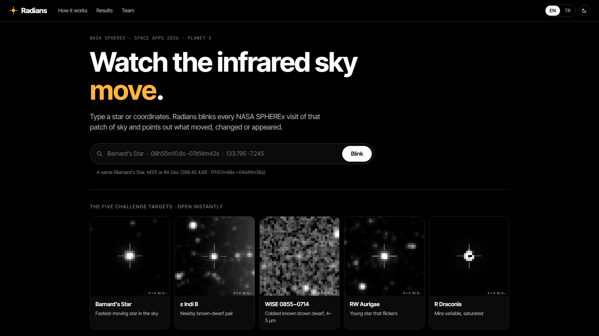
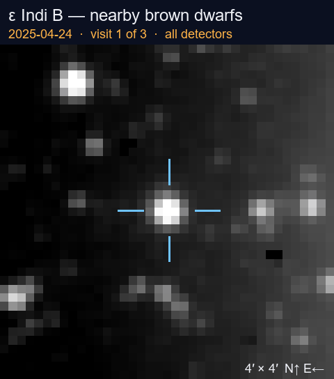
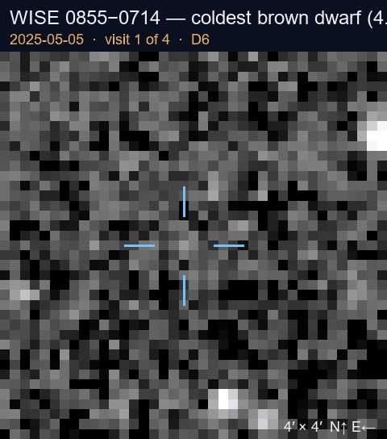
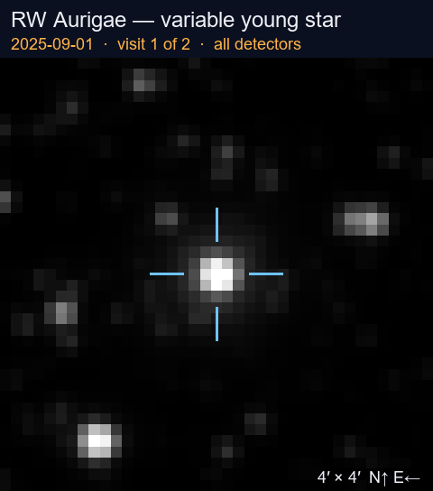
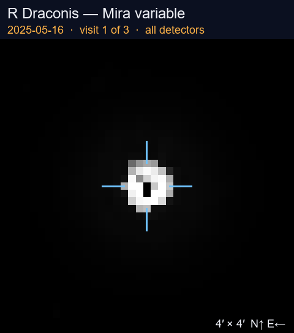
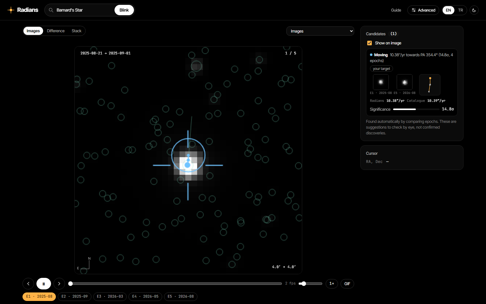
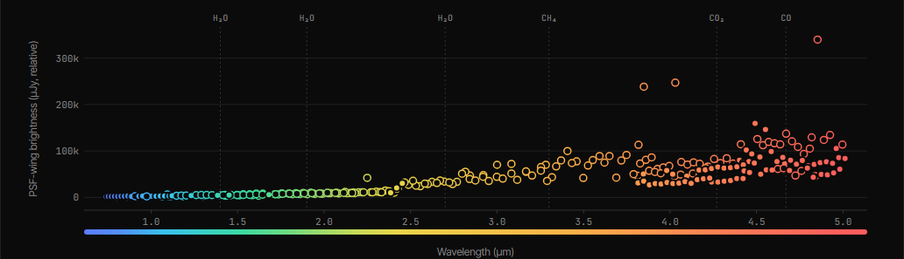
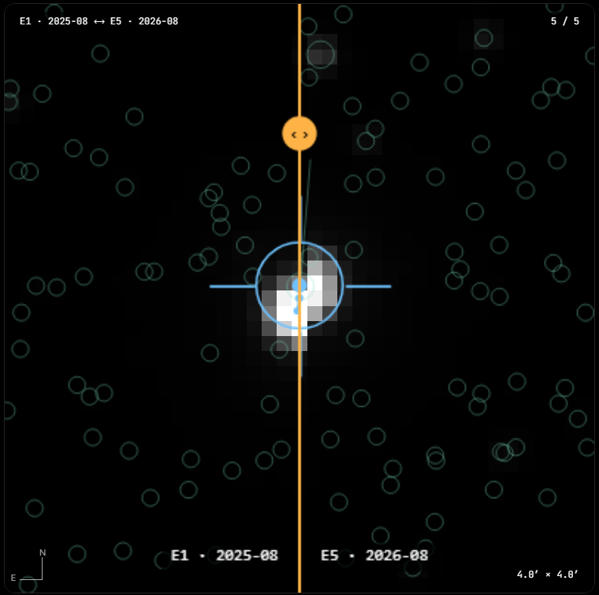
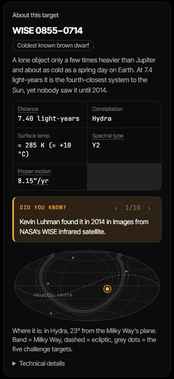

NASA Space Apps 2026 · Planet X and SPHEREx
Radians
Watch the infrared sky move.
Blink every NASA SPHEREx visit of any patch of sky and see what moved, changed or appeared.
radians.onrender.com · github.com/merttmtnn-sudo/Radians
The idea
A blink comparator
for the infrared sky
SPHEREx images the whole sky every six months in 102 infrared colours: hundreds of exposures of any spot, in an archive built for astronomers. In 1930 Tombaugh found Pluto by flipping between two plates. Radians flips through every SPHEREx visit, in a browser.







First and last SPHEREx visit as Radians blinks them: Barnard’s Star has moved north (marker), RW Aurigae has changed brightness.
How to use it
Four steps, no installation

Pick a target
A star name, RA/Dec, or one of the five challenge targets.
Watch it blink
Each frame is one SPHEREx visit. Play, step, zoom, export a GIF.
Let it point
Difference views and an automatic finder mark what moved, changed or appeared, with before/after cut-outs.
Dig deeper
Click any star for its spectrum and light curve; share a link, download CSV.
How it works
From a star name to an aligned flip-book
1 · RESOLVE
CDS Sesame
Name → position and proper motion.
›
2 · FIND
NASA IRSA
Every SPHEREx exposure covering it.
›
3 · READ
Byte ranges
~0.5 MB of each 65 MB file.
›
4 · ALIGN
One sky grid
Reprojected, flag-masked, co-added per visit at matched wavelengths.
›
5 · CHECK
Known sky
Gaia DR3, SkyBoT, NEOSSat.

SPHEREx’s filters change wavelength across the detector, so one position measured in every exposure is a 0.75–5 µm spectrum. Radians builds it on the fly for any star you click, with the water, methane, CO₂ and CO bands marked.
Results on the challenge targets
It finds what the challenge hid
| Target | Radians measured | Known value |
|---|---|---|
| Barnard’s Star | moves 10.38″/yr, PA 354° | 10.39″/yr, PA 356° |
| ε Indi B | moves 4.65″/yr, PA 125° | 4.68″/yr, PA 123° |
| WISE 0855−0714 | moves 8.16″/yr (D5+D6, 4–5 µm) | 8.15″/yr, coldest brown dwarf |
| RW Aurigae | brightness changes ×1.7 | known variable young star |
| R Draconis | saturated: PSF-wing light curve | Mira variable |
| Injected fakes, found | S/N 8 | S/N 12 | S/N 20 |
|---|---|---|---|
| Mover | 50% | 85% | 100% |
| New source | 42% | 85% | 100% |
600 fake objects injected into real SPHEREx frames of the five fields. No false alarms. Details in docs/VALIDATION.md.
Built to explore and learn
Not just a viewer: a guide to the sky


About this target
Distance, temperature, type and “did you know?” facts, from SIMBAD and our own notes, with an all-sky map.
Before / after
Drag a divider between the first and the latest visit.
Story tour & Explore
A guided tour of the five targets, or a jump to one of 14 famous fast or variable stars.
Listen, learn, share
Hear a light curve as sound, hover any term (σ, PA, µm) for a plain explanation, save a finding as an image.
Context from partner agencies
Every candidate is checked
against what is already known
ESA
Gaia DR3
Stars moved to each frame’s date with their proper motions; each find labelled known or possibly new.
IMCCE
SkyBoT
Known asteroids and comets marked at the exact time of each frame.
CSA
NEOSSat
Archived images of the field from Canada’s asteroid-hunting microsatellite (CADC).
Planet X
A distant planet is a faint dot that is somewhere else at the next visit.
Radians makes that comparison available for any spot SPHEREx has seen twice, to anyone, with known stars and asteroids already accounted for. Open source (MIT), running at radians.onrender.com.